スリーポイント照明を 1 回で組む
ライトの無い場面に、キー・フィル・リムの 3 灯（スリーポイント）をまとめて作り、スザンヌへ向けます。

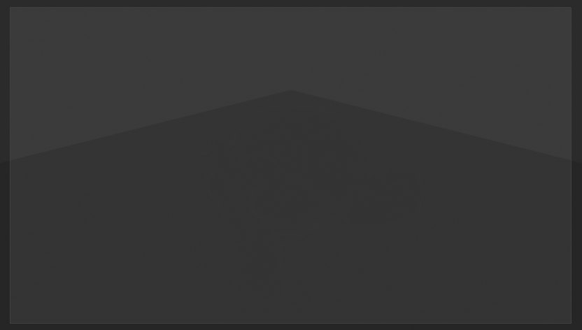

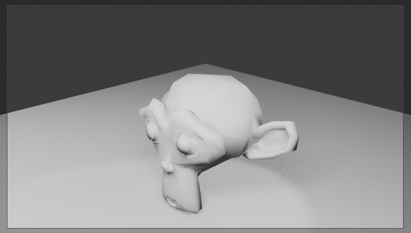
SmartTools アドオン解説書
版 1.0.0 ／ 2026年11月18日 ／ Blender 5.1.2 用
SmartCamLight Suite は、シーンの中のカメラとライトを一覧から選んで、その場で設定を変えられるアドオンです。カメラごとに解像度・出力先・ファイル形式・フレーム範囲を覚えさせておき、「適用」でシーンのレンダー設定へ写せます。構図ガイド、カメラリグ（カメラを狙いの物に向け続ける仕掛け）、オーバースキャン（同じ絵の周りに余白を足してレンダーすること）、物理モーションブラーも、同じパネルから作れます。ライト側では、ライトリンキング（そのライトでどの物を照らすかを決める機能）、スタジオ照明の自動配置、ソフトボックス、空の自動作成（ダイナミックスカイ）ができます。パネルの中は「常時機能切り替え」「カメラ」「ライト」の 3 つの見出しに分かれています。各見出しの右にある「？」を押すと、その見出しの説明が出ます。

オブジェクトモードの3DビューポートでNキーを押し、「Smart CamLight」タブを選びます。照明の操作を始めるには「ライト」を開きます。
入口全体の図では、「カメラ」と「ライト」が別々の見出しとして並びます。
同じライト・同じカメラで、一覧のFloorだけを除外。顔は照らしたまま床が暗くなり、チェックを戻せば両方が再び照らされます。

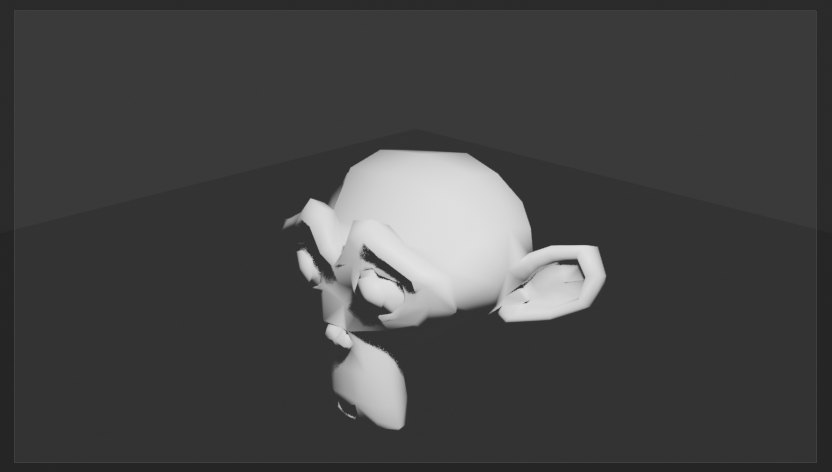
試す前に 対応するレンダー条件を本文で確認し、同じライトで比較する。
この作例の手順を見る作例を画像で保存 (PNG)導入・トラブルのヘルプ
ライトの無い場面に、キー・フィル・リムの 3 灯（スリーポイント）をまとめて作り、スザンヌへ向けます。


カメラ別の解像度を 1:1 のプリセットにして、「適用」でシーンへ写します。カメラの枠が正方形になります。
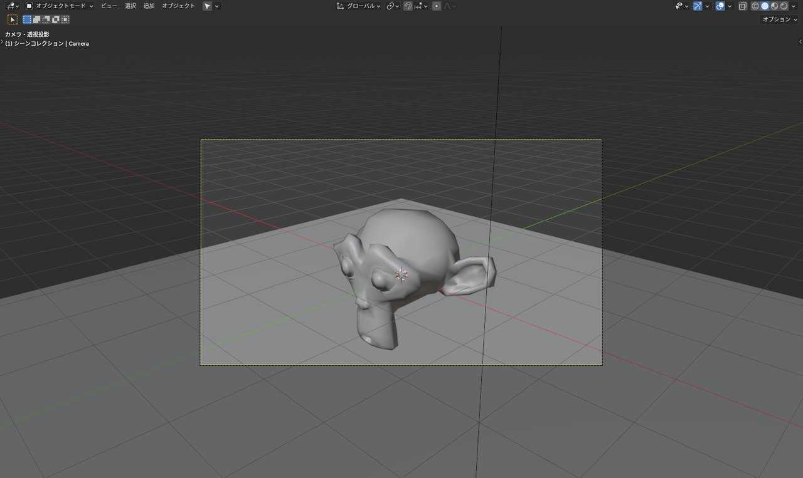
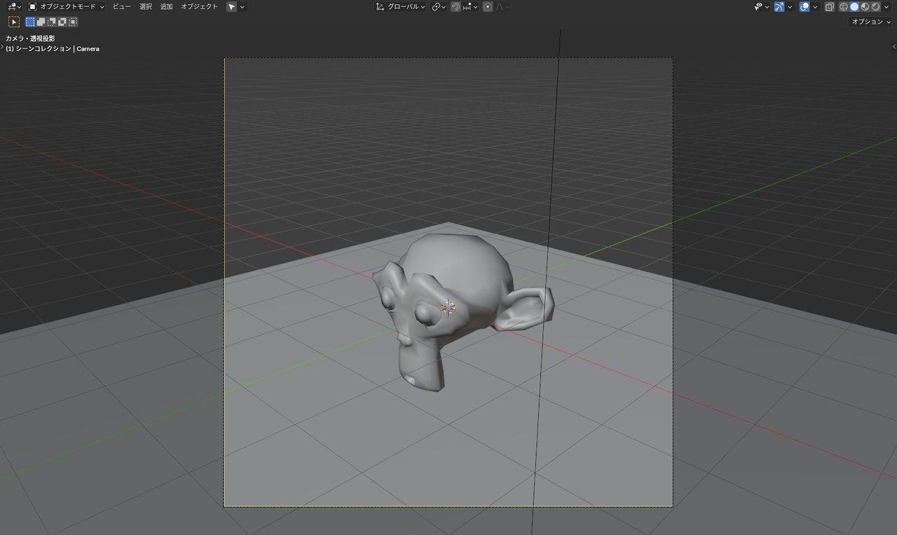
カメラとライトの管理を、サイドバーの 1 つのパネルにまとめるアドオンです。
このアドオンを使うと、画面は次のように変わります。くわしい操作は 5 章の各機能の「実例」で説明します。
実例スリーポイント照明を 1 回で組む（スザンヌで試した様子）
ライトの無い場面に、キー・フィル・リムの 3 灯（スリーポイント）をまとめて作り、スザンヌへ向けます。
見どころ：ライトが無い時は真っ暗でほとんど何も見えませんが、適用した後は、強いキーライト（右手前）・弱いフィルライト（左手前）・後ろからのリムライトの 3 灯でスザンヌと床が照らされます。
このアドオンならではの機能を、図に番号を付けて説明します。図の中の番号と、図の下の一覧の番号が対応しています。図を押すと大きく表示されます。設定の一つ一つは 5 章の各見出しで説明します。
Blender の解像度や出力先はシーンに 1 組しかなく、横長と縦長、寄りと引きのように複数のカメラで書き出すには、毎回設定を書き換える必要があります。SmartCamLight Suite では、解像度・出力先・ファイル形式などをカメラごとに持たせ、押すたびにシーンへ写せます。「全カメラ」を押せば、カメラ別設定を入れたカメラを 1 台ずつ順番にレンダーして保存します。
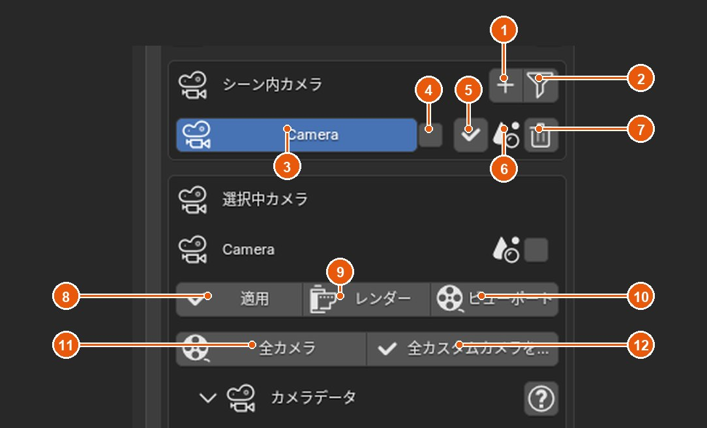
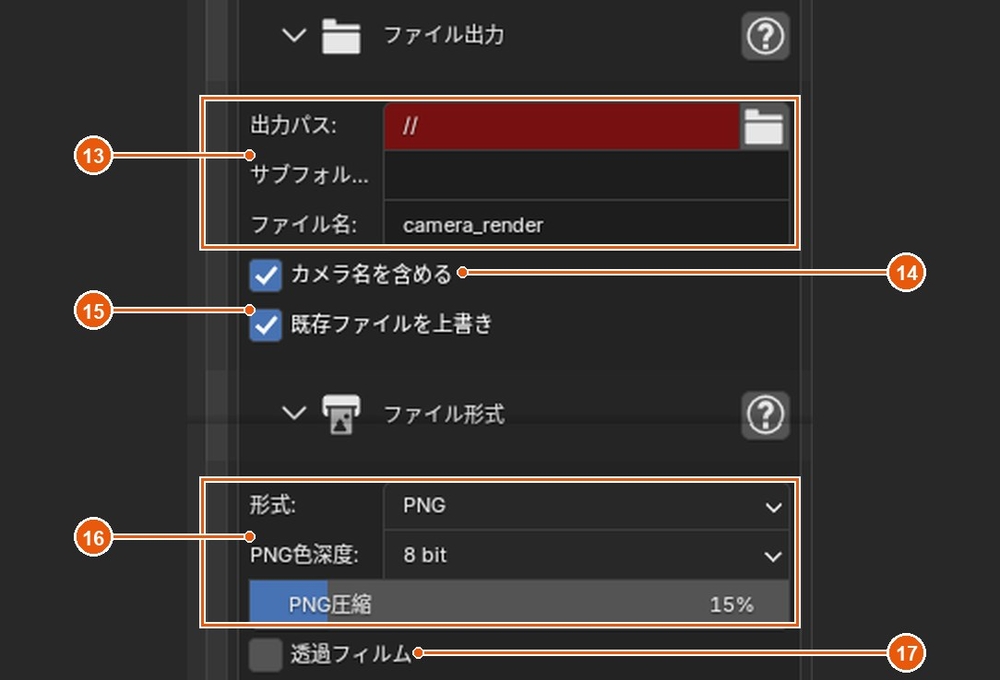
くわしい設定：5-3. シーン内カメラ、5-4. 選択中カメラ、5-6. 解像度、5-8. ファイル出力、5-9. ファイル形式
照明を 1 灯ずつ置いて向きを合わせる代わりに、スタジオの定番の組み方をプリセットから 1 回で作ります。数・種類・並べ方（円・グリッド・ランダム・ライン）を決めて、選んだ物の周りへまとめて置くこともできます。前と後の 2 枚は、ライトの無い場面で「スリーポイント」を適用した例です。

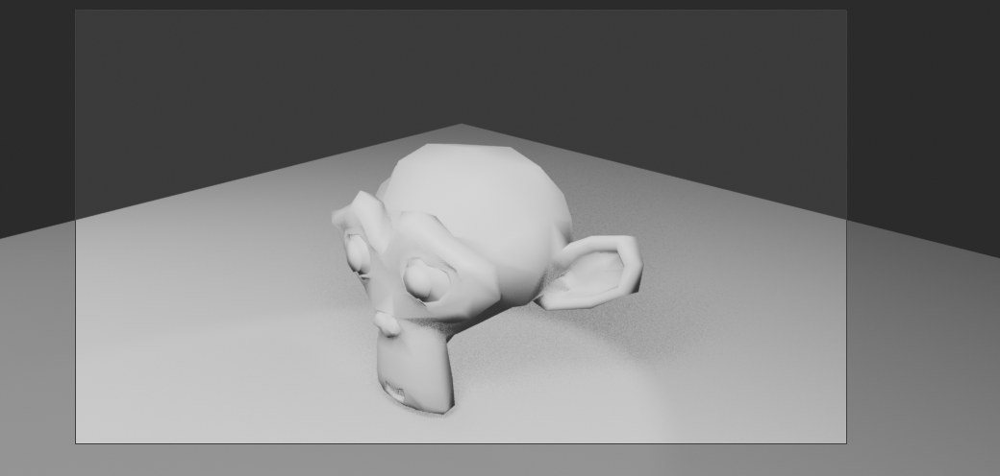
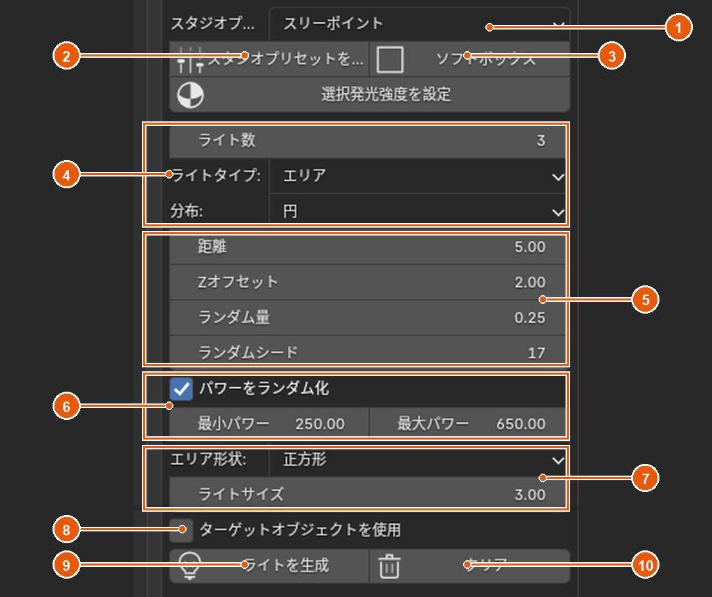
くわしい設定：5-20. ライト生成
Blender のライトリンキングは、ライトが照らす物と影を落とす物をコレクションで限る機能です。そのままではコレクションを自分で作って割り当てる必要がありますが、ここでは「初期化」と ＋ だけで済みます。前と後の 2 枚は、同じライトの照らす物をスザンヌだけに限った例です。ライトの位置と明るさは変えていません。
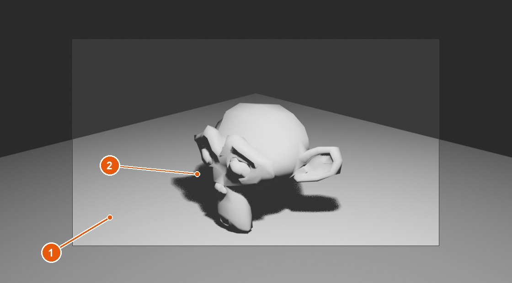

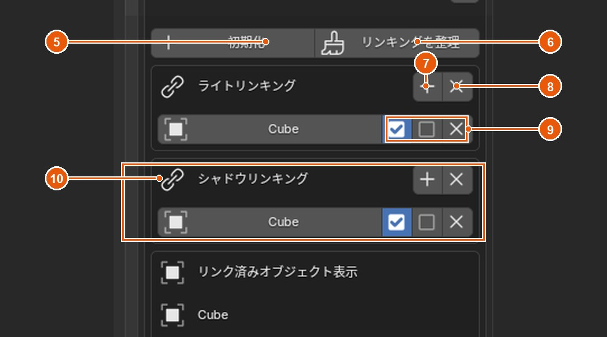
くわしい設定：5-19. ライトリンキング
アドオンの入れ方・画面を日本語にする方法・N パネルと「？」ヘルプの共通の使い方は、「SmartTools 全体仕様書」にまとめています。先にそちらの 2〜5 章を読んでください。
| 入れる ZIP | SmartCamLightSuite_1.0.0.zip |
|---|---|
| Blender の画面での名前 | Smart CamLight |
| 動く Blender | 5.1.2 |
3D ビューポートのサイドバー（N パネル）の「Smart CamLight」タブにあります。同じパネルは、画像エディター、ノードエディター、シーケンサー、ムービークリップエディター、ドープシート、グラフエディター、NLA、テキストエディター、ファイルブラウザー、スプレッドシートのサイドバーにも出せます。どのエディターに出すかは Smart Tools Manager の設定に従います。Smart Tools Manager が入っていないときは、これらのエディターすべてに出ます。
| 出る画面 | 3D ビューポート、画像エディター（UV エディター）、ノードエディター、ビデオシーケンサー、動画クリップエディター、ドープシート、グラフエディター、NLA エディター、テキストエディター、ファイルブラウザー、スプレッドシート |
|---|---|
| タブ | Smart CamLight |
| モード | オブジェクトモード |
画面の上から順に、見出しごとに説明します。見出しの右の「？」を押すと、同じ内容の説明が画面にも出ます。青い枠の「実例」は、スザンヌなどの簡単なモデルで実際に操作し、3D ビューでの変化を前と後で並べたものです。
パネルは 3 つの見出しに分かれています。見出しの左の三角か、見出しの名前を押すと開閉します。右の「？」でその見出しの説明が出ます。最初は「カメラ」と「ライト」が開いています。
場所サイドバー ＞ Smart CamLight タブ
| 表示 | 働き |
|---|---|
| 常時機能切り替え | 設定の保存のしかたと、自動で動く機能の入・切をまとめた見出しです。 |
| カメラ | カメラの一覧と、選んだカメラの設定をまとめた見出しです。 |
| ライト | ライトの一覧、選んだライトの設定、ライト生成、ダイナミックスカイをまとめた見出しです。 |
| ？ | その見出しの説明をポップアップで出します。ヘルプを開いても、シーンは変わりません。 |
パネルの設定の保存のしかたと、フレームが変わったときなどに自動で動く機能を、1 つずつ入・切します。右のボタンは押すたびに「有効」「無効」と表示が変わります。「Nパネル状態保存」だけ最初から「有効」で、ほかは最初は「無効」です。
場所Smart CamLight ＞ 常時機能切り替え
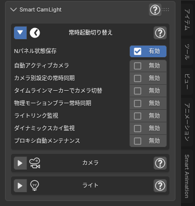
| 表示 | 働き |
|---|---|
| Nパネル状態保存 | 有効のときは、パネルの設定を変えるたびに、設定ファイル（JSON）へすぐ保存します。無効のときは、.blend の保存・読み込み、アドオンの無効化、Blender の終了のときにまとめて保存します。カメラやライトそのものの内容は .blend ファイルに入ります。 |
| 自動アクティブカメラ | 3D ビューなどでカメラを選んでアクティブにすると、そのカメラをシーンのアクティブカメラにします。 |
| カメラ別設定の常時同期 | フレームが変わるたびに、シーンのアクティブカメラの解像度・出力・フレーム範囲・スタンプ・モーションブラーの設定を、シーンのレンダー設定へ写します。カメラ別設定を有効にしたカメラだけが対象です。そのカメラで「オーバースキャンを有効化」を入れていると、広げた解像度と短くした焦点距離も、そのたびに書き込みます。 |
| タイムラインマーカーでカメラ切替 | フレームが変わるたびに、カメラを結び付けた直前のマーカーを見て、アクティブカメラを自動で切り替えます。 |
| 物理モーションブラー常時同期 | フレームが変わるたびに、アクティブカメラのシャッタースピードまたはシャッター角から、モーションブラーの値を計算し直します。そのカメラで「物理モーションブラーを有効化」を入れているときだけ働きます。 |
| ライトリンク監視 | リンク済みオブジェクトとして選んでいた物が削除されたときだけ、その選択を外します。 |
| ダイナミックスカイ監視 | 空の設定やワールドが変わったときだけ、SmartCamLight Suite が作った空と太陽ライトを更新します。 |
| プロキシ自動メンテナンス | SmartCamLight Suite が作った補助の物のうち、古くなったものだけを自動で片付けます。 |
シーンにあるカメラを名前順に並べた一覧です。名前を押すと、そのカメラを選び、シーンのアクティブカメラにします。カメラが 1 台もないときは「このシーンにカメラが存在しません。」と出ます。
場所Smart CamLight ＞ カメラ ＞ シーン内カメラ
| 表示 | 働き |
|---|---|
| ＋（Smart カメラを追加） | 新しいカメラを作り、カメラ別設定を有効にして、アクティブカメラにします。 |
| じょうごの印（カスタムカメラのみ表示） | カメラ別設定を有効にしたカメラだけを一覧に出します。ほかのカメラが消えるわけではありません。 |
| カメラ名のボタン | そのカメラを選び、アクティブカメラにします。隠れていたカメラは、表示してから選びます。 |
| チェックボックス（カメラ別設定を有効化） | このカメラのレンダー・出力・ガイド・オーバースキャン・モーションブラー・レビュー・リグの設定を使うときに入れます。入れていないカメラは「適用」でシーンへ写せません。 |
| チェックの印（カメラ設定を適用） | このカメラの設定を、シーンのレンダー設定へ写します。 |
| 矢印の印（カメラを選択） | アクティブカメラでないカメラの行に出ます。押すと、そのカメラをアクティブカメラにします。アクティブカメラの行には、代わりにシーンの印が出ます。 |
| ゴミ箱（カメラを削除） | そのカメラをシーンから削除します。そのカメラに SmartCamLight Suite が付けたガイド・リグ・パス・POV テキストも一緒に消えます。ほかのカメラは消しません。 |
一覧で選んだカメラの名前と、よく使う操作のボタンが並びます。一覧で選んでいないときは、アクティブな物のカメラ、またはシーンのアクティブカメラが出ます。この下に、カメラの設定の折りたたみが続きます。
場所Smart CamLight ＞ カメラ ＞ 選択中カメラ
| 表示 | 働き |
|---|---|
| カメラ名の横のシーンの印 | そのカメラがシーンのアクティブカメラのときに出ます。表示だけで、押しても何も起きません。 |
| カメラ名の横のチェックボックス | 一覧と同じ「カメラ別設定を有効化」です。 |
| 適用 | このカメラをアクティブカメラにして、解像度・出力形式・フレーム範囲・スタンプ・透過フィルム・モーションブラーの設定を、シーンのレンダー設定へ写します。「オーバースキャンを有効化」を入れているカメラでは、オーバースキャンも掛かります。カメラ別設定が無効のときは「カメラのカスタム設定が無効、またはカメラが見つかりません。」と出て、何も写しません。 |
| レンダー | このカメラの設定をシーンへ一時的に写して、静止画をレンダーし、出力パスへ保存します（「形式」が動画のときは、フレーム範囲全体を 1 本の動画にします）。終わると、シーンの設定は元に戻ります。カメラ別設定が無効のカメラでは、設定は写さず、シーンのいまの設定のままレンダーします。時間がかかることがあります。 |
| ビューポート | 同じように設定を一時的に写して、ビューポートの見た目のまま静止画をレンダー（ビューポートレンダー）します。 |
| 全カメラ | カメラ別設定を有効にしたカメラを、1 台ずつ設定を写しながら順番にレンダーします。終わると、シーンの設定は元に戻ります。時間がかかることがあります。 |
| 全カスタムカメラを適用 | カメラ別設定を有効にした全カメラについて、設定を 1 回ずつ写します。最後に処理したカメラがアクティブカメラになり、その設定がシーンに残ります。 |
選んだカメラの位置・回転と、レンズやセンサーなどの Blender 標準のカメラ設定を、ここでまとめて変えられます。最初は開いています。
場所選択中カメラ ＞ カメラデータ
| 表示 | 働き |
|---|---|
| オブジェクト名 | カメラの名前です。 |
| 位置／回転／スケール | カメラの置き場所・向き・大きさです。 |
| タイプ | 透視投影・平行投影などの、カメラの種類です。 |
| 焦点距離／画角 | レンズの焦点距離と、写る範囲の角度です。 |
| センサー幅／センサー高さ／センサーフィット | カメラのセンサーの大きさと、どちらの辺に合わせるかです。 |
| シフトX／シフトY | カメラを回さずに、写る範囲を横・縦にずらします。 |
| クリップ開始／クリップ終了 | これより近い物・遠い物は写りません。 |
| 表示サイズ | ビューポートでのカメラの印の大きさです。 |
| 被写界深度 | ピントの合う範囲の設定です。「DOFを使用」「フォーカスオブジェクト」「フォーカス距離」「F値」「絞り羽根」があります。 |
| DOFを選択オブジェクトに設定 | 3D ビューでいまアクティブな物（このカメラ以外）を、ピントを合わせる物（フォーカスオブジェクト）にし、「DOFを使用」も入れます。先に 3D ビューで狙いの物を選んでから押します。 |
このカメラでレンダーするときの画像の大きさを決めます。ここの値はカメラごとに保存され、「適用」を押すまでシーンには写りません。最初は開いています。
場所選択中カメラ ＞ 解像度
| 表示 | 働き |
|---|---|
| 幅／高さ | 画像の横と縦のピクセル数です。最初は 1920 と 1080 です。 |
| スケール | 解像度の倍率（%）です。 |
| ピクセル比率X／ピクセル比率Y | 1 ピクセルの横と縦の比率です。 |
| 解像度を入れ替え | 幅と高さを入れ替えて、横長と縦長を切り替えます。 |
| 縦横比プリセット（16:9／9:16／1:1／2.39:1／4:3） | よく使う縦横比の幅と高さを、このカメラの設定に入れます。シーンへ写すには「適用」を押します。 |
実例カメラの縦横比を正方形（1:1）にする（スザンヌで試した様子）
カメラ別の解像度を 1:1 のプリセットにして、「適用」でシーンへ写します。カメラの枠が正方形になります。
見どころ：カメラの画面の枠が、横長（16:9）から正方形に変わり、上下に広がります。シーンの解像度は 1080 × 1080 になります。
このカメラでレンダーするフレームの範囲を決めます。範囲の決め方を 2 つから選びます。
場所選択中カメラ ＞ フレーム範囲
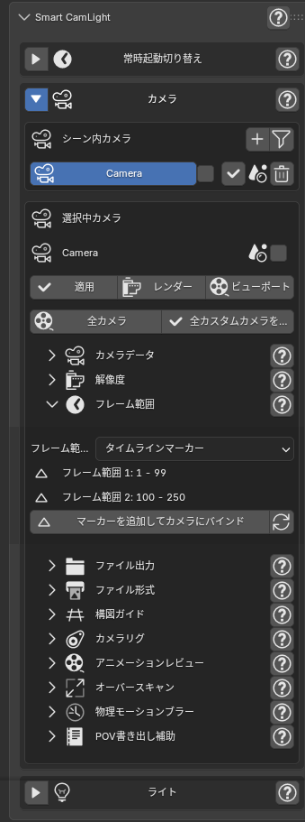
| 表示 | 働き |
|---|---|
| フレーム範囲モード | 「カメラ別範囲」は、このカメラに保存した開始・終了・ステップを使います。「タイムラインマーカー」は、このカメラに結び付けたマーカーから範囲を決めます。 |
| 開始／終了／ステップ | 「カメラ別範囲」のときに出ます。最初と最後のフレームと、何フレームおきに描くかです。 |
| タイムライン範囲を同期 | 「カメラ別範囲」のときに出ます。入れると、「適用」のときに、この範囲をシーンの開始・終了・ステップにも写します。入れないときは、シーンのフレーム範囲は変えません。 |
| フレーム範囲 1: 開始 - 終了 | 「タイムラインマーカー」のとき、マーカーから求めた範囲が並びます。範囲は、そのマーカーから、次のカメラ付きマーカーの 1 つ手前まで（無ければシーンの終わりまで）です。マーカーがないときは「このカメラにバインドされたタイムラインカメラマーカーがありません。」と出ます。 |
| マーカーを追加してカメラにバインド | いまのフレームにマーカーを作り、このカメラに結び付けます。 |
| 更新の印（マーカーカメラを更新） | いまのフレームで有効なマーカーのカメラを、アクティブカメラにします。 |
実例タイムラインのマーカーでカメラを切り替える（スザンヌで試した様子）
2 台のカメラをマーカーに結び付けます。フレームが変わると、見ているカメラが自動で切り替わります。

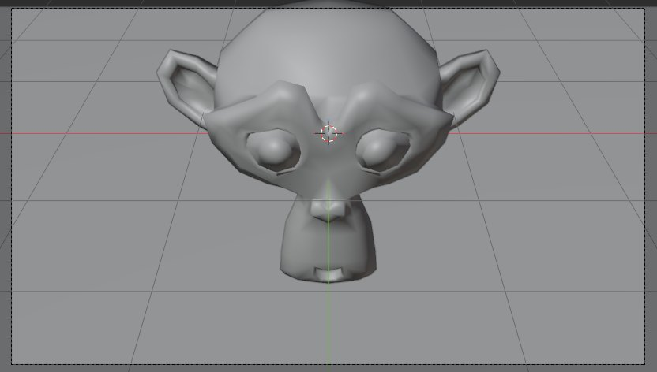
見どころ：フレーム 1 は斜めから、フレーム 30 は正面からの構図になります。切り替えのキーを打たなくても、マーカーの位置でカメラが替わります。
このカメラでレンダーした画像や動画の保存先と名前を決めます。
場所選択中カメラ ＞ ファイル出力
| 表示 | 働き |
|---|---|
| 出力パス | 保存先のフォルダーです。最初は「//」です。「//」で始めると、いまの .blend ファイルのある場所からの相対の場所になるので、先に .blend ファイルを保存しておきます。図のように欄が赤く表示されているときは、その場所が見つからないという Blender の印です。 |
| サブフォルダー | 出力パスの中に作るフォルダーの名前です。空でもかまいません。 |
| ファイル名 | 保存するファイルの名前です。 |
| カメラ名を含める | 出力パスの中に、カメラの名前のフォルダーを作って保存します。 |
| 既存ファイルを上書き | 同じ名前のファイルがあるとき、上書きします。 |
保存するファイルの形式を選び、その形式の細かい設定をします。選んだ形式に合う欄だけが出ます。
場所選択中カメラ ＞ ファイル形式
| 表示 | 働き |
|---|---|
| 形式 | PNG、JPEG、OpenEXR、H.264 MP4、H.264 MKV、ProRes MOV から選びます。「適用」や「レンダー」を押すと、プロパティの「出力」の「メディアタイプ」も、形式に合わせて「画像」か「動画」に切り替わります。動画の形式では、「レンダー」「ビューポート」「全カメラ」は、1 枚の静止画ではなくフレーム範囲全体を 1 本の動画に書き出します。 |
| PNG色深度／PNG圧縮 | PNG のときに出ます。色深度は「8 bit」か「16 bit」です。 |
| JPEG品質 | JPEG のときに出ます。 |
| EXR色深度／EXRコーデック／EXRプレビューを保存 | OpenEXR のときに出ます。色深度は「半精度Float」か「単精度Float」です。 |
| 動画品質／動画ビットレート／GOPサイズ | 動画の形式のときに出ます。動画品質は「ロスレス」「知覚的にロスレス」「高」「中」「低」から選びます。 |
| 音声を含める／音声コーデック／音声ビットレート | 動画の形式のときに出ます。「音声を含める」を入れると、音声コーデック（「音声なし」「AAC」「MP3」）と音声ビットレートの欄が出ます。 |
| 透過フィルム | 背景を透明にしてレンダーします。 |
| 焼き込みメタデータを有効化 | 画像の上に、情報の文字（スタンプ）を焼き込みます。「アニメーションレビュー」の「レビュースタンプを使用」が入っているときも、焼き込みは有効になります。 |
カメラの画面に、構図を決めるための線を付けます。線はカーブの物として作られ、カメラの子（カメラと一緒に動く物）になります。
場所選択中カメラ ＞ 構図ガイド
| 表示 | 働き |
|---|---|
| 三分割法 | 画面を縦横 3 つに分ける線です。 |
| 中央十字 | 画面の真ん中の十字です。 |
| セーフエリア／セーフエリア比率 | 画面の端が切れても大事な物が残るように示す枠と、その大きさです。 |
| ガイド線スタイル | 「ソリッド」（つながった線）か「破線」を選びます。 |
| ガイド線幅／ガイド色 | 線の太さと色です。線幅の最初の値は 0.004 です。線が太くて被写体が隠れるときは小さく、見えにくいときは大きくします。 |
| ガイドをレンダー表示 | ガイドの線を、レンダー結果にも写します。 |
| 作成 | ガイドを作り、そのガイドの物を選んだ状態にします。このカメラの前のガイドは置き換えます。設定を変えたあとは、もう一度押して作り直します。 |
| 削除 | このカメラに付けた SmartCamLight Suite のガイドだけを消します。 |
実例カメラの画面に三分割の構図ガイドを付ける（スザンヌで試した様子）
カメラに、三分割の線・中央の十字・セーフエリアの枠を付けて、構図を決めやすくします。
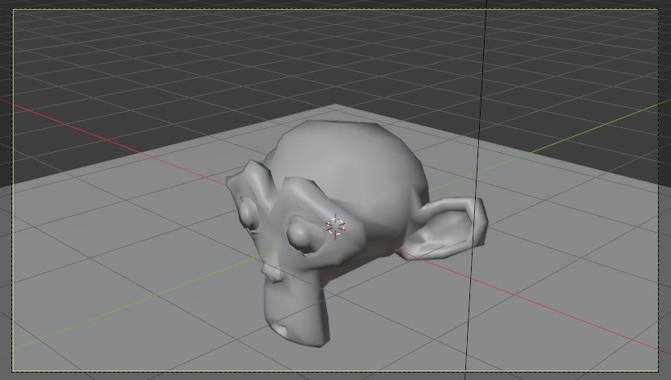
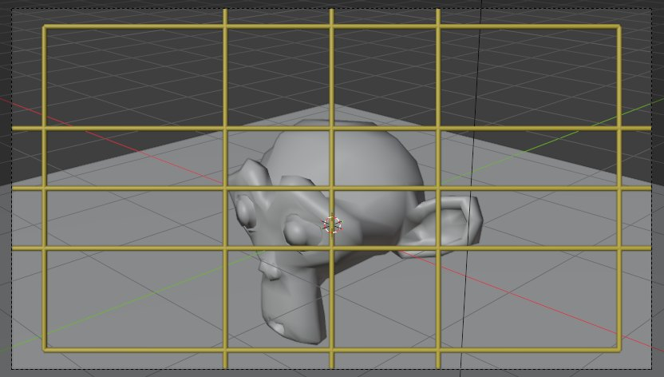
見どころ：カメラの画面の中に、黄色い三分割の線・中央の縦横の線・内側の枠（セーフエリア）が出ます。線はカメラの子なので、カメラを動かしても一緒について来ます。既定では「ガイドをレンダー表示」が OFF なので、確認用の動画やレンダーには写りません。線が太くて被写体が隠れるときは「ガイド線幅」を小さくして、もう一度「作成」を押します。
カメラを狙いの物（ターゲット）へ向け続ける仕掛けを作ります。カメラキーの記録や、カメラの動きのベイク（毎フレームのキーに焼き付けること）もここでします。
場所選択中カメラ ＞ カメラリグ
| 表示 | 働き |
|---|---|
| リグタイプ | 「ターゲットリグ」は、狙いの Empty（形のない目印の物）と Track To（向きを合わせる拘束）を作ります。「ドリーターゲットリグ」は、それに加えて親の Empty（ドリー）を作り、カメラの移動と向きを別々に動かせます。どちらで作っても、カメラの位置は変わりません。最初は「ドリーターゲットリグ」です。 |
| ターゲット距離／ターゲットサイズ | カメラの正面の、どれだけ先にターゲットを置くかと、ターゲットの印の大きさです。サイズを変えると、できているターゲットの印も変わります。 |
| ターゲットをDOFに使用 | ターゲットを、ピントを合わせる物にも使います。 |
| カメラリグを作成 | リグを作り、ターゲットを選んだ状態にします。ターゲットを動かすと、カメラがそちらを向きます。このカメラの前のリグの目印と拘束は、新しい物に置き換わります。 |
| 曲線の印（カメラキーからパスを作成） | 「フレーム範囲」の「開始」〜「終了」の間（「ステップ」おき）、カメラの位置をたどって、カーブのパスを作ります。 |
| カメラキーを挿入 | いまのフレームに、位置・回転・焦点距離・フォーカス距離のキーを打ちます。 |
| カメラフライビューを開始 | 3D ビューをこのカメラの視点にし、Blender 標準のウォーク操作を始めます。すでにカメラの視点のときは、視点はそのままです。W・A・S・D キーとマウスでカメラを動かし、左クリックで確定、Esc で取り消します。3D ビューのサイドバーから押したときだけ働きます。 |
| カメラトランスフォームをベイク | 「フレーム範囲」の「開始」〜「終了」の間（「ステップ」おき）、カメラの見た目どおりの位置・回転をキーに焼き付けます。カメラの親子付けは外れます。Track To の拘束は残るので、ターゲットを動かすと向きが変わります。要らなければ「Smart カメラリグをクリア」でターゲットと拘束を消します。 |
| Smart カメラリグをクリア | シーンの全カメラについて、SmartCamLight Suite が作ったターゲット・ドリー・パスの物と Track To の拘束を消します。カメラは残り、位置と向きはいまの見た目のままです。 |
実例目印を動かすと、カメラがそちらを向く（カメラリグ）（スザンヌで試した様子）
カメラの正面に目印（ターゲット）を作ります。目印を動かすだけで、カメラの向きが変わります。

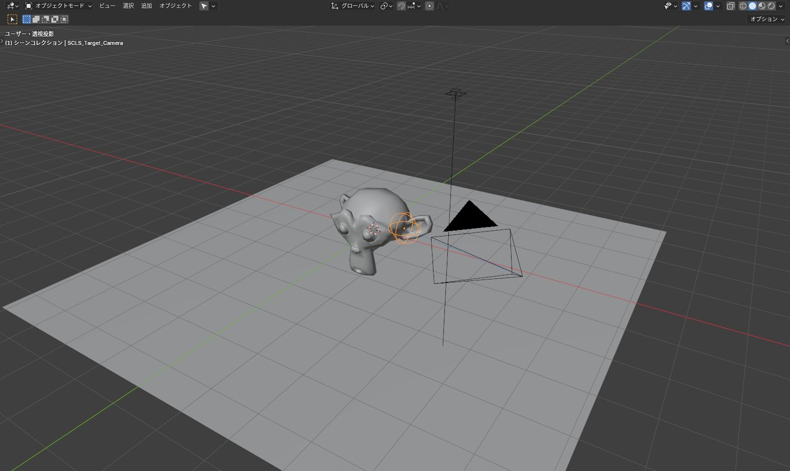
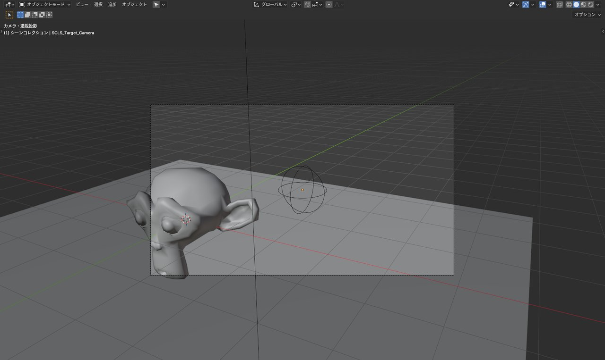
見どころ：作った直後は構図が変わりません。外から見ると、カメラの正面の先に球の目印ができています。球を横へ動かすと、カメラがそちらを向き、スザンヌが画面の端へ寄ります。
実例親の箱を動かしてカメラを運ぶ（ドリーターゲットリグ）（スザンヌで試した様子）
カメラに親の Empty（ドリー）とターゲットを付けます。ドリーを動かすと、カメラはターゲットを向いたまま移動します。

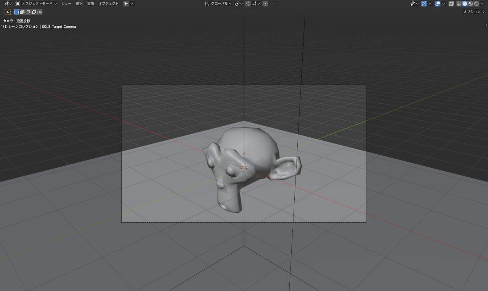
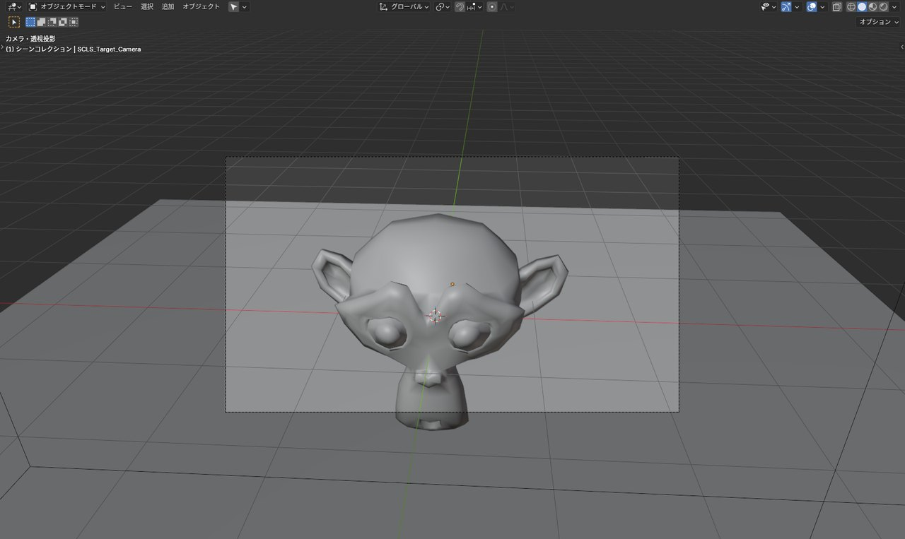
見どころ：作った直後は、カメラの位置も構図も変わりません。ドリーを動かすと、カメラが一緒に動き、ターゲットを向き続けるので、スザンヌは画面の真ん中あたりに写ったままで、見える角度だけが変わります。
アニメーションのチェック用に、画面へ文字（スタンプ）を焼き込んで書き出す準備と、書き出しをします。
場所選択中カメラ ＞ アニメーションレビュー
| 表示 | 働き |
|---|---|
| レビュースタンプを使用 | スタンプを使います。最初から入っています。 |
| カメラ名をスタンプ／フレームをスタンプ／シーン名をスタンプ | 焼き込む情報を選びます。 |
| レビュースケール | この見出しの「ビューポート」で書き出すときの、解像度の倍率（%）です。 |
| レビュースタンプを準備 | レンダーはせず、スタンプの設定だけをシーンへ写します。 |
| ビューポート | カメラの設定を一時的に写して、ビューポートの見た目でアニメーション全体をレンダーし、出力パスへ書き出します。終わると、シーンの設定は元に戻ります。 |
元の絵の周りに余白を足してレンダーします。シーンの解像度を増やし、同時にカメラの焦点距離を短くするので、元の絵の大きさ（画素の数）は変わらず、増えた画素の分だけ周りが写ります。広げたままにできるカメラは 1 台だけです。広げる前の解像度と焦点距離は、あとで戻せます。
場所選択中カメラ ＞ オーバースキャン
| 表示 | 働き |
|---|---|
| オーバースキャンを有効化 | 入れると、このカメラの設定を写すボタン（「適用」「レンダー」「ビューポート」「全カメラ」「全カスタムカメラを適用」、一覧のチェックの印）と「カメラ別設定の常時同期」でも、オーバースキャンを使います。切のままだと、それらは元の解像度と焦点距離で働きます。下の「適用」ボタンは、この欄の入・切にかかわらず働きます。 |
| オーバースキャンモード | 「割合」は縦横比を保って % で広げます。「追加ピクセル」は、指定のピクセル数を上下左右の端に足します（幅と高さは、それぞれその 2 倍ずつ増えます）。「指定解像度」は、ぴったりの大きさを指定します。 |
| オーバースキャン比率／追加ピクセル／指定幅・指定高さ | 選んだモードに合わせて出る欄です。 |
| 適用 | いまのシーンの解像度を覚えます。そのあと、広げた大きさをシーンの解像度に入れ、その分だけカメラの焦点距離を短くします（平行投影のカメラは、写す範囲のスケールを大きくします）。元にする大きさは、カメラ別設定が有効のカメラでは「解像度」の幅・高さ、無効のカメラではシーンの解像度です。何度押しても広がりすぎません。別のカメラで適用すると、前のカメラの焦点距離は元に戻ります。 |
| オーバースキャンを戻す | 覚えておいた幅・高さ・倍率にシーンの解像度を戻し、広げていたカメラの焦点距離も元に戻します。 |
実例同じ絵のまま、周りの余白を増やす（オーバースキャン）（スザンヌで試した様子）
解像度を 30% 増やし、その分だけカメラの写る範囲を広げます。スザンヌの大きさ（画素の数）はそのままで、周りに余白ができます。

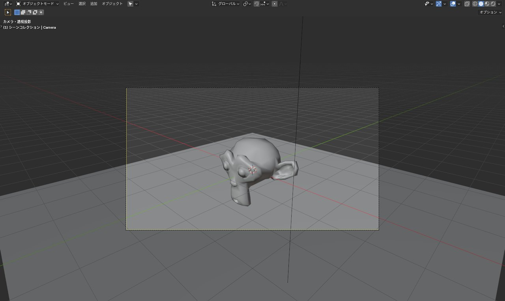

見どころ：「適用」の後は、カメラの枠の中に床の周りまで写り、スザンヌは枠に対して小さくなります。解像度が 2496 × 1404 に増え、焦点距離は 50 mm から約 38.5 mm に短くなるので、レンダーするとスザンヌは同じ画素の大きさで写り、四方に余白が増えます。「オーバースキャンを戻す」で、解像度も焦点距離も元に戻ります。
実際のカメラの言い方（シャッタースピード、シャッター角）で、動きのぶれ（モーションブラー）の量を決めます。
場所選択中カメラ ＞ 物理モーションブラー
| 表示 | 働き |
|---|---|
| 物理モーションブラーを有効化 | このカメラでこの機能を使います。入れていないと、下の「モーションブラーを更新」を押しても何も変わりません。 |
| モーションブラーモード | 「シャッタースピード」か「シャッター角」を選びます。 |
| シャッタースピード | 1/48 のような値で入れます。シーンのフレームレートを使って、Blender の値に直します。 |
| シャッター角 | 角度で入れます。180 度で、1 フレームの半分の時間だけ露光した量になります。 |
| モーションブラーを更新 | シーンのモーションブラーを入れ、計算した値を Blender のモーションブラーの設定へ書き込みます。 |
カメラの位置・向き・画角を、POV-Ray という別のレンダラー向けの文章にして、Blender のテキスト（テキストエディターで開ける文書）に書き出します。
場所選択中カメラ ＞ POV書き出し補助
| 表示 | 働き |
|---|---|
| POVメモ | 書き出す文章の先頭に添えるメモです。 |
| POVテキストにDOFを含める | カメラの「DOFを使用」が入っているとき、ピントの情報（絞りと焦点）も文章に入れます。 |
| POVカメラテキストを作成 | テキストを作ります。もう一度押すと、同じカメラの前のテキストを消して作り直します。 |
シーンにあるライトを名前順に並べた一覧です。名前を押すと、そのライトを選びます。ライトが 1 つもないときは「このシーンにライトが存在しません。」と出ます。
場所Smart CamLight ＞ ライト ＞ シーン内ライト
| 表示 | 働き |
|---|---|
| ＋（Smart ライトを追加） | 「ライト生成」で選んでいるライトタイプで新しいライトを作り、ターゲットへ向けます。このライトは「生成済み」の扱いになります。 |
| じょうごの印（生成ライトのみ表示） | SmartCamLight Suite が作ったライトだけを一覧に出します。手で作ったライトが消えるわけではありません。 |
| 開いた目の印・閉じた目の印（全ライト表示を設定） | シーンの全ライトを、ビューポートとレンダーの両方でまとめて表示、または非表示にします。 |
| ライト名のボタン | そのライトを選びます。隠れていたライトは、表示してから選びます。 |
| 目の印（ライト表示を切り替え） | そのライトのビューポートとレンダーの表示を切り替えます。 |
| 鍵の印（ライトロックを切り替え） | そのライトをロックします。ロック中も選べますが、「ライトデータ」の設定の欄が触れなくなります。 |
| ゴミ箱（ライトを削除） | そのライトをシーンから削除します。そのライトのターゲットも一緒に消えます。 |
一覧で選んだライトの名前が出ます。SmartCamLight Suite が作ったライトには「生成済み」、ロック中のライトには鍵の印が付きます。この下に「ライトデータ」と「ライトリンキング」が続きます。
場所Smart CamLight ＞ ライト ＞ 選択中ライト
| 表示 | 働き |
|---|---|
| 生成済み | SmartCamLight Suite が作ったライトであることを示します。 |
| 鍵の印 | ロック中のライトであることを示します。 |
選んだライトの位置・種類・明るさ・色などを変えます。ロック中は「ロック中」と出て、設定の欄が触れなくなります。最初は開いています。
場所選択中ライト ＞ ライトデータ
| 表示 | 働き |
|---|---|
| オブジェクト名／位置／回転 | ライトの名前・置き場所・向きです。 |
| タイプ | ポイント・サン・スポット・エリアなどの、ライトの種類です。 |
| エネルギー／カラー | 明るさと光の色です。 |
| 形状／サイズ／サイズY | エリアライトのときに出ます。光る面の形と大きさです。 |
| ソフトサイズ | ポイント・スポットのときに出ます。影のぼけ具合に関わる、光源の大きさです。 |
| スポットサイズ／スポットブレンド | スポットのときに出ます。光の広がる角度と、縁のぼかしです。 |
| ターゲットサイズ | ライトターゲットの印の大きさです。 |
| シャドウを使用 | このライトで影を落とします。 |
| 最大バウンス | 「Cycles」の枠にあります。光が跳ね返る回数の上限です。 |
| ロック中／ロック解除 | いまの状態を表示するボタンです。ロックしていないときは「ロック解除」、ロック中は「ロック中」と出ます。押すたびにロックを切り替えます。 |
| ライトターゲットを作成 | Empty の目印を作り、ライトがいつもそれを向くようにして、目印を選んだ状態にします。目印は「ターゲットオブジェクト」、または 3D ビューでアクティブな物（ライトとカメラ以外）の位置に置かれます。どちらもないときは原点です。前のターゲットの目印と拘束は、新しい物に置き換わります。 |
| ミラー X／Y | ライトを複製し、X 軸または Y 軸で反対側に置いて、ターゲットへ向けます。複製は「生成済み」の扱いになり、複製が選択中のライトになります。 |
| 分離表示 | このライトだけを表示し、ほかのライトを隠します。戻すときは、「シーン内ライト」の見出しの横の、開いた目の印を押します。 |
実例ライトを左右反対側にも置く（ミラー X）（スザンヌで試した様子）
右側にある暖かい色のライトを複製して、X 軸の反対側（左側）に置き、スザンヌへ向けます。
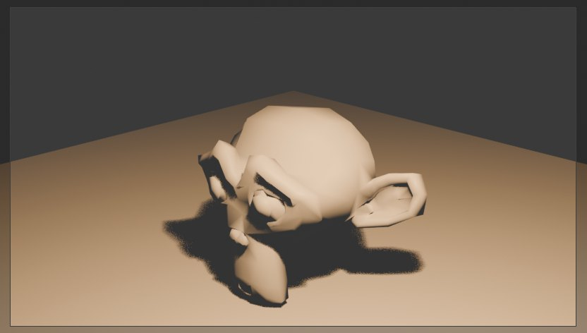
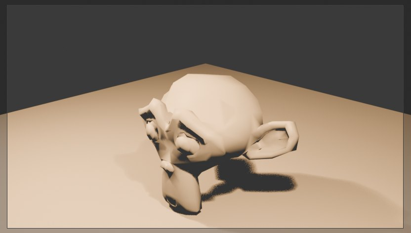
見どころ：右からだけ照らされて画面の左側（スザンヌの向かって左）に濃い影が落ちていたのが、左からも同じ色と明るさの光が当たり、左側の濃い影が消えます。代わりに、右側へ新しい影が出ます。
ライトリンキング（このライトがどの物を照らすか）と、シャドウリンキング（このライトでどの物が影を落とすか）を、パネルから決めます。まず「初期化」で、Blender の受光用・遮光用のコレクション（物のまとまり）を作ります。最初は開いています。
場所選択中ライト ＞ ライトリンキング
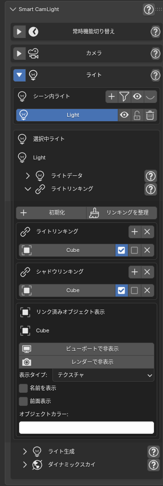
| 表示 | 働き |
|---|---|
| 初期化 | 選んだライト用に、受光用と遮光用のコレクションを作ります。コレクションはシーンの直下に並びます。作る前は「未初期化」と出ます。初期化の詳しい手順は、見出しの「？」から確認できます。 |
| リンキングを整理 | どのライトにも使われていない、空の SmartCamLight Suite のリンク用コレクションを消します。 |
| ライトリンキング／シャドウリンキングの ＋（選択をリンキングへ追加） | 3D ビューで選んでいる物のうち、ライト以外の物を、それぞれのコレクションに加えます。 |
| 枠の見出しの右の × の印（ライトリンキングをクリア） | 「初期化」のあとに、「ライトリンキング」「シャドウリンキング」の枠の見出しの、＋ の右に出ます。そのコレクションの割り当てを、ライトから外します。ライトは、また全部の物を照らす（全部の物が影を落とす）ようになります。物は消しません。 |
| 物の名前のボタン（リンク済みオブジェクトを選択） | その物を選び、下の「リンク済みオブジェクト表示」で設定できるようにします。 |
| チェックの印・空のチェックの印（リンク状態を設定） | チェックの印は「含める」、空のチェックの印は「除外」です。今の状態の印が押された形になります。ライトリンキングで「除外」にすると、その物はこのライトに照らされなくなり、シャドウリンキングで「除外」にすると、その物はこのライトの影を落とさなくなります。リストからは外れないので、すぐ元に戻せます。 |
| 物の行の右端の × の印（リンク済みオブジェクトを削除） | その物だけをコレクションから外します。シーンからは消しません。見出しの × と同じ形なので、押す場所に気をつけます。 |
| リンク済みオブジェクト表示 | 選んだ物の「ビューポートで非表示」「レンダーで非表示」「表示タイプ」「名前を表示」「前面表示」「オブジェクトカラー」を変えます。物を選ぶ前は「オブジェクト未選択」と出ます。リンク一覧から物を選ぶ手順は、見出しの「？」から確認できます。 |
実例このライトでスザンヌだけを照らす（ライトリンキング）（スザンヌで試した様子）
1 つのライトが照らす物を、スザンヌだけに限ります。そのあと、割り当てを外して元に戻します。作る前の表示は「未初期化」です。詳しい操作説明は、見出しの「？」で確認できます。


見どころ：＋ を押すと、床に光が当たらなくなり、スザンヌだけが明るく浮かびます。× の印を押すと、また床も照らされます。ライトの位置や明るさは変わっていません。
実例リストの物を照らさないようにする（リンク状態）（スザンヌで試した様子）
スザンヌと床の両方をライトリンキングに入れ、床だけを空のチェックの印で「除外」にします。

見どころ：空のチェックの印を押すと、床に光が当たらなくなり、スザンヌだけが照らされます。リストから外さずに切り替えられるので、チェックの印を押すとすぐ元に戻せます。今の状態は、押された形の印で分かります。
既製の照明の配置（スタジオプリセット）や、数と並べ方を決めたライトの自動生成で、ライトをまとめて作ります。作ったライトには「生成済み」の印が付きます。ライトは、ターゲットオブジェクト、または 3D ビューでアクティブな物（ライトとカメラ以外）を中心に置かれます。どちらもないときは、原点が中心です。
場所Smart CamLight ＞ ライト ＞ ライト生成
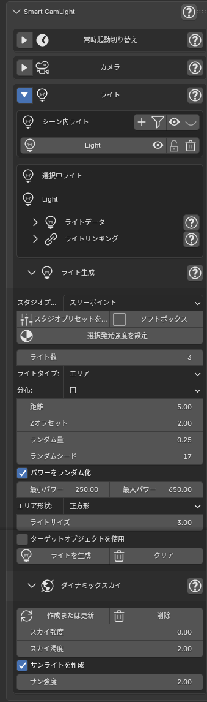
| 表示 | 働き |
|---|---|
| スタジオプリセット | 「スリーポイント」（キー・フィル・リムの 3 灯）、「ソフトスタジオ」（大きく柔らかいエリアライト）、「リム円形」（周りを囲む輪郭用のスポットライト）、「商品ストリップ」（反射のある商品向けの細長いライト）、「スカイフィル」（広い天井光と空のワールド）から選びます。 |
| スタジオプリセットを適用 | 選んだプリセットのライトを作り、ターゲットへ向けます。「スカイフィル」では、ダイナミックスカイの空も一緒に作ります。 |
| ソフトボックス | 光る板（発光するメッシュ）とエリアライトを組にして、中心から「距離」だけ手前、「Zオフセット」だけ上に作り、ターゲットへ向けます。板の大きさは「ライトサイズ」、明るさは「最大パワー」で決まります。EEVEE でも Cycles でも、物を照らします。 |
| 選択発光強度を設定 | 3D ビューで選んだメッシュのマテリアルの発光の強さを、出てくる小窓の「強度」で入れます。Principled BSDF というノードがないマテリアルは変えません。 |
| ライト数／ライトタイプ／分布 | 作るライトの数・種類・並べ方です。ライトタイプは「ポイント」「太陽」「スポット」「エリア」、分布は「円」「グリッド」「ランダム」「ライン」から選びます。 |
| 距離／Zオフセット | 中心からの距離と、高さのずらし量です。 |
| ランダム量／ランダムシード | 置き場所のばらつきの量と、ばらつきを毎回同じにするための番号です。 |
| パワーをランダム化／最小パワー／最大パワー | 入れると、明るさを最小と最大の間でばらつかせます。入れないときは、すべて最大パワーの明るさになります。 |
| エリア形状／エリアサイズX・Y／ライトサイズ／スポットサイズ／スポットブレンド | ライトタイプとエリア形状に合わせて出る、大きさや形の欄です。 |
| ターゲットオブジェクトを使用／ターゲットオブジェクト | ライトの中心と向き先にする物を指定します。「ターゲットオブジェクトを使用」を入れると、「ターゲットオブジェクト」の欄が出ます。 |
| ライトを生成 | 上の設定で、ライトを作ります。 |
| クリア | SmartCamLight Suite が作ったライト（「生成済み」のもの）と、ソフトボックスの光る板を消します。手で作ったライトは残ります。 |
実例スリーポイント照明を 1 回で組む（スザンヌで試した様子）
ライトの無い場面に、キー・フィル・リムの 3 灯（スリーポイント）をまとめて作り、スザンヌへ向けます。
見どころ：ライトが無い時は真っ暗でほとんど何も見えませんが、適用した後は、強いキーライト（右手前）・弱いフィルライト（左手前）・後ろからのリムライトの 3 灯でスザンヌと床が照らされます。
実例光る板とライトの組を置く（ソフトボックス）（スザンヌで試した様子）
光る板とエリアライトの組を、スザンヌの手前の上に作ります。いらなくなったら「クリア」で板ごと消せます。
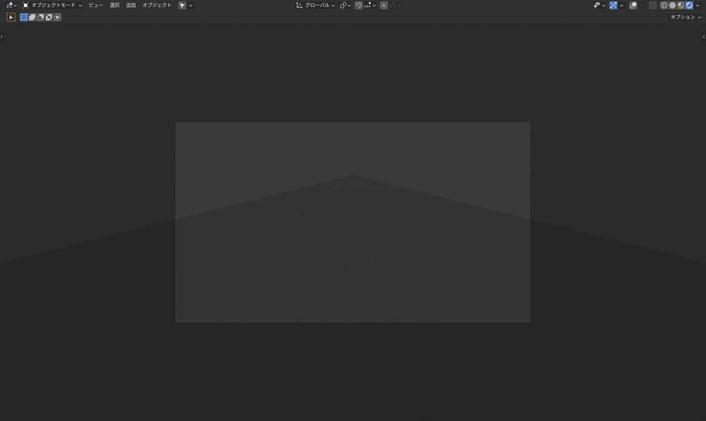
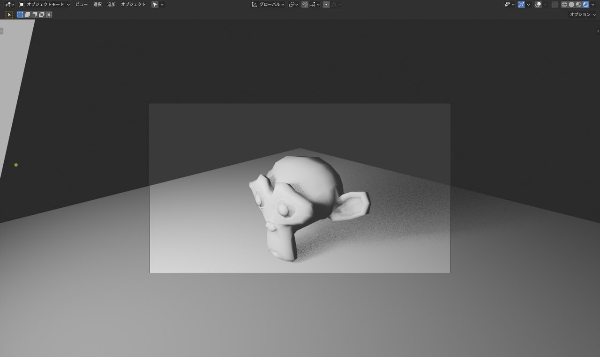
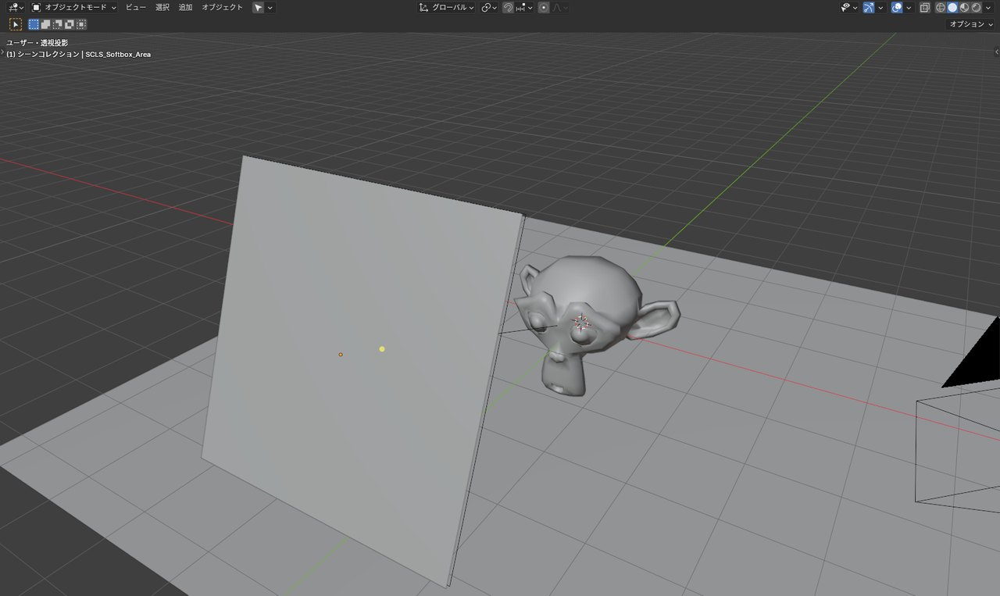
見どころ：前はほとんど真っ暗ですが、押した後は、手前の上から来る柔らかい光でスザンヌと床が照らされます。外から見ると、スザンヌへ向いた板ができています。「クリア」を押すと、ライトも板も消えて、元の暗い場面に戻ります。
空のテクスチャー（Sky Texture）を使ったワールドを、元のワールドとは別に作ります。太陽ライトも一緒に作れます。消すと、作る前のワールドに戻ります。
場所Smart CamLight ＞ ライト ＞ ダイナミックスカイ
| 表示 | 働き |
|---|---|
| 作成または更新 | 空のワールドを作り、シーンのワールドにします。すでにあるときは、設定を反映し直します。元のワールドのノードは書き換えません。 |
| 削除 | 作る前のワールドに戻し、SmartCamLight Suite が作った空のワールドと太陽ライトを消します。「ダイナミックスカイ監視」も無効に戻ります。 |
| スカイ強度 | 空の明るさです。 |
| スカイ濁度 | 空気のかすみ具合です。 |
| サンライトを作成／サン強度 | 太陽ライトを一緒に作るかどうかと、その明るさです。サン強度は、サンライトを作成が入っているときに出ます。 |
実例空と太陽の光をまとめて作る（ダイナミックスカイ）（スザンヌで試した様子）
空のテクスチャーのワールドと太陽ライトを作り、屋外の光にします。元のワールドは書き換えません。
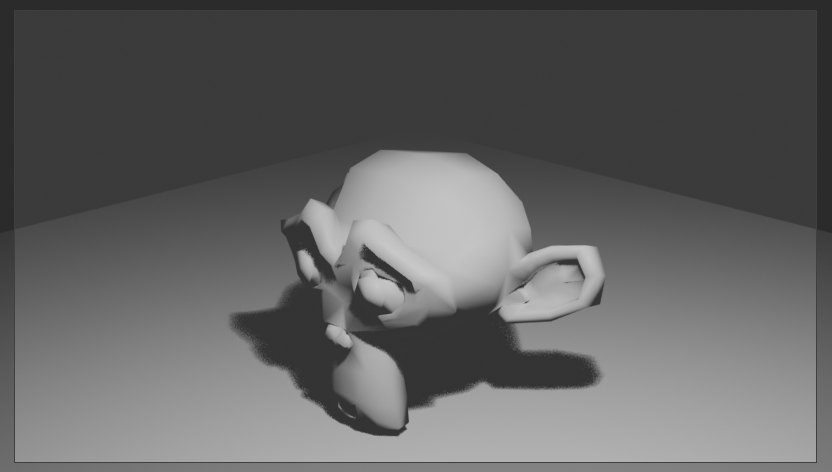
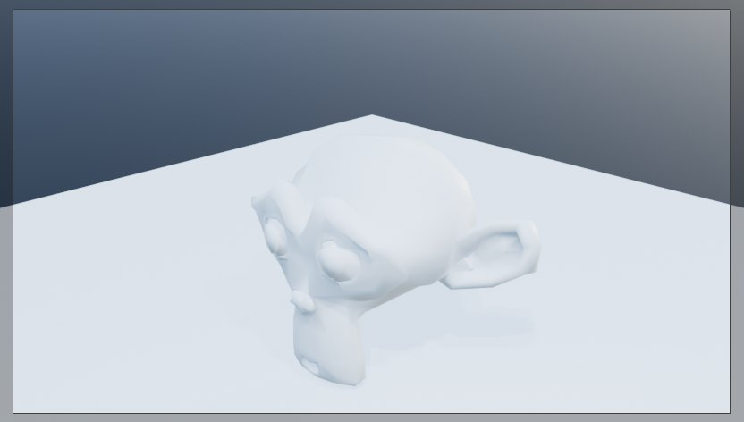
見どころ：背景が灰色から青みのある空の色に変わり、空の光で場面全体が明るく照らされます。前のくっきりした影は薄くなります。「削除」を押すと、作る前のワールドに戻ります。
横長と縦長のカメラを、1 つのシーンで使い分ける
結果：カメラごとに保存した解像度でレンダーされ、出力パスに保存されます。終わると、シーンの設定は元に戻ります。
カットごとにカメラを替える
結果：再生すると、マーカーの位置でアクティブカメラが切り替わります。
カメラ名とフレーム番号入りのビューポートレンダーを作る
結果：カメラ名とフレーム番号を焼き込んだ動画が、出力パスに書き出されます。
キャラクターや商品を、基本の 3 灯で照らす
結果：キー・フィル・リムのライトが作られ、ターゲットへ向きます。
ライトリンキングで、照らす物を分ける
結果：そのライトが、リストに含めた物だけを照らすようになります。
アドオンが出ない・日本語にならない、など全部のアドオンに共通のことは、全体仕様書の「困った時」を見てください。
| アドオン | SmartCamLight Suite（smart_camlight_suite） |
|---|---|
| 版 | 1.0.0 |
| ZIP | SmartCamLightSuite_1.0.0.zip |
| 大きさ | 118,574 バイト |
| SHA256 | 199d0564ccb6b4fbe4aa150b7fb5f7f73c1ca9e7be6bf15d148a0487a0713981 |
SmartCamLight Suite 解説書 v1.0.0 ／ 2026-11-18 作成